Reliably Ever After
transcription
The project
This project aims to provide a comparison between the performance of Trankribus and ChatGPT on the transcription of printed text. In particular, we have chosen to conduct an analysis on the text Lo Cunto de li Cunte by Giambattista Basile, a Neapolitan author of the 17th century, using the edition of 1788 by Porcelli.
We decided to focus on this specific topic for our project due to a personal interest in this author. Given that we all have a background in the humanities, we had often come across his name during our studies but never had the opportunity to explore it in depth. Additionally, we thought it would be interesting to conduct an analysis of his texts to engage with a different literary language, as the writing in Lo cunto de li cunte is entirely based on the Neapolitan dialect, so the transcription of his text was positively challenging for us.
We also found it very stimulating to observe the origins of many stories that are still deeply ingrained in today's collective imagination. Rediscovering their roots — sometimes rather dark ones — we noted that, despite the centuries that have passed, these works remain highly relevant and continue to have a strong following.
The author
Gian Battista Basile (1575-1632) was a neapolitan writer, he served as a courtier for various Italian nobles and held administrative roles in cities around Naples.
He is best remembered for his collection of folktales, "Lo Cunto de li Cunte", also known as "The Tale of Tales" or "The Pentamerone." This work, written in Neapolitan dialect, is considered one of the earliest and most influential fairy tale collections in Europe, that has inspired several other authors.
“Lo Cunto de li Cunte” contains 50 stories told over 5 days by 10 narrators, with a general frame story. The tales include early versions of many famous fairy tales later popularized by authors like the Brothers Grimm, such as Cinderella, Rapunzel, and Sleeping Beauty.
The success of Basile’s work and its popularity are due to both the subjects covered and the language used. These are, in fact, fairy tales drawn from Neapolitan folklore and narrated in the local popular dialect, yet they are crafted with literary expertise, as true novellas. Thus, despite their popular origins, with magical and comic elements, and the use of Neapolitan dialect, the author manages to elevate his text through the use of literary marvels, particularly thanks to the masterful Baroque use of metaphor and the employment of astonishing imagery. In this way, a kind of dissonance is created between the themes and the chosen language, giving rise to a truly original and masterful work, unique in its kind.
Lo cunto de li cunti remains a cornerstone of Italian and European literary history and continues to be studied for its cultural and linguistic significance.
- Period: 17th century
- Context: Naples
- Main work "Lo Cunto de li Cunti"
- Language: neapolitan dialect
Documents
Once we selected “Lo Cunto de li Cunte” as the main work for our transcription project, the next step was to identify the edition and the portions of text to transcribe in order to begin the creation of our model.
We chose to base our training corpus on one of the first editions available, in particular we selected Porcelli’s 1788, which is readily available on Europeana.
We would also like to emphasize that all the titles of the texts and the proper names mentioned, refer to the edition we used, whereas later editions of the work feature different versions.
Rather than working with the entire text, we focused on the Introduction (titled Ntroduzzeione), and two collection’s tales: ”La Gatta Cenerentola”and Vardiello. For other information about the selection of the corpus, you’ll find a dedicated section here.
Overall, we provided the manual transcription of 23 pages, amounting to a total of 6134 words.
Once the model was created, we decided to train it on an additional text from the collection, namely La Vecchia Scoperta, to ensure its proper functionality.
Total transcribed pages
Total transcribed words
Hard Workers
Lo cunto de li cunte
- Lo cunto de li cunte
- Introduction
- La gatta Cenerentola
- Vardiello
- La vecchia scoperta


{kind=link}
{kind=link}
Workflow
In order to create a high-quality, reliable, and valid project, it is essential to adhere to a well-defined project baseline which includes all the crucial steps that must be successfully completed to achieve excellent results.
Task definition
First and foremost, it is crucial to define the task of the project clearly, ensuring a precise understanding of its scope and objectives.
The primary goal of the Reliably Ever After project is to train a model capable of faithfully transcribing the text as it appears on the printed page.
Additionally, it seeks to compare the transcription performance of the Transkribus platform with that of ChatGPT.
The analysis starts with the Transkribus platform, employing an annotated corpus as a training set and a raw corpus for evaluation. The focus then shifts to ChatGPT, directly instructing it to produce an accurate transcription of the raw test set.
Finally, the results from both transcriptions are compared and discussed in detail.
Corpus selection
In the process of selecting the text, we aimed to identify portions that we considered both the most relevant and diverse to ensure the model would perform optimally.
Specifically, we chose to manually transcribe 11 pages of the Ntroduzzeione (Introduction), as they contain the framework of the entire work; 9 pages of La Gatta Cenerentola (The Cat Cinderella), the most famous novella in the corpus and the earliest version of the globally known Cinderella tale; and finally, 8 pages of Vardiello, to ensure our corpus had a sufficient number of pages. These transcriptions were used to build our training set.
Our raw test set is based on another tale from Lo cunto de li cunte, titled La vecchia scoperta.
Unlike the training corpus, these pages were not manually transcribed by us. Instead, they were transcribed by the best-performing model generated during the Text Recognition Model and by ChatGPT.
Annotation guidelines
Since the printed texts in the images are written in 17th-18th century neapolitan dialect, they were generally pretty well understandable. We decided to manually transcribe them using Transkribus, starting from scratch and doing most of the work without relying on any pre-existing transcriptions of the texts.
First, we uploaded the images of the pages from the selected collection of tales, which we had downloaded in .png format from the Europeana source previously mentioned. Then, within Transkribus, we transcribed the documents with the images displayed side by side, making the process more straightforward.
Then, we divided and organized the printed text in each image into different green regions and underlined the lines of text with a blue baseline. These two steps are fundamental for establishing the reading order of the text once it has been transcribed.
Once the texts were structured with regions and baselines, we began transcribing them. To ensure accurate work and create a reliable, well-executed, and unambiguous annotated corpus, we developed this detailed annotation guideline that emphasized the rules we followed during the transcription process.
The transcription followed the text for what concerns:
Issue |
Example
Solution | |
|---|---|---|
| Punctuation | 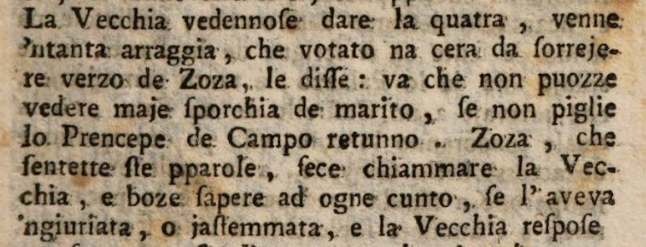Introduction of Lo Cunto de li Cunte.')"> | The transcription followed the original text for what concerns traditional punctuation such as comma, colon, full stop, semicolon, question mark, exclamation mark, single and double quotation marks and apostrophe. |
| Uppercase and lowercase letters | 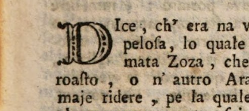Introduction of Lo Cunto de li Cunte.')"> | The transcription followed the original text for what concerns uppercase and lowercase letters. In those cases in which the sentence began with a drop cap followed by another uppercase letter we have decided to stick to the original text and to transcribe both the letters in uppercase. |
| Italic text | 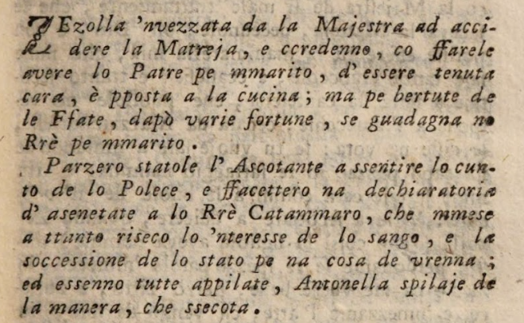La gatta Cenerentola of Lo Cunto de li Cunte.')"> | The transcription followed the original text for what concerns italic texts. They are represented through the dedicated "I" Italic tag of Transkribus. |
| Diacritical characters | 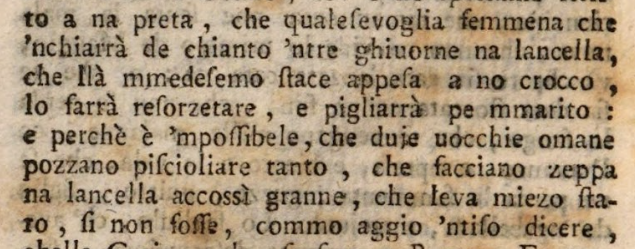Introduction of Lo Cunto de li Cunte.')"> | All the accents have been transcribed according to the original text (such as "farrà", "perchè", "pigliarrà" and "accossì"). |
| Hyphenated words | 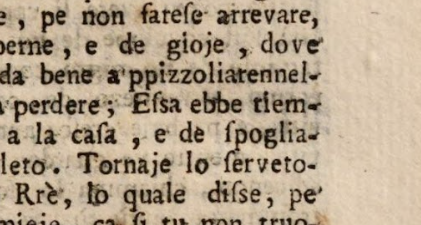La gatta Cenerentola of Lo Cunto de li Cunte.')"> | Hyphenated words that appear at the end of the line have been transcribed by breaking them up according to the original text. This means that they were graphically represented by adding a “-” at the end of the line only if present. |
Click on the pictures to zoom in!
In order to create a clear, defined and simple corpus that could be easily understood and trained we have decided to reduce and, when possible, even remove unclear and missing parts:
Issue |
Example
Solution | |
|---|---|---|
| Page numbers | 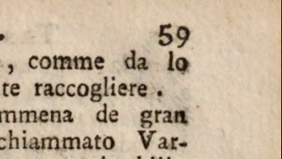Vardiello of Lo Cunto de li Cunte.')"> | Page numbers, positioned at the top left and top right corner of the pages, have been ignored. |
| Headers and running titles | 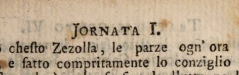La gatta Cenerentola of Lo Cunto de li Cunte.')"> | Headers and running titles, that repat the main title of the tale and appear on the top of each page, have not been considered. |
| Catch-words | 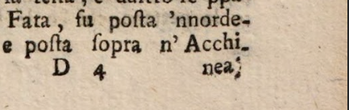La gatta Cenerentola of Lo Cunto de li Cunte.')"> | Catch-words, which are placed at the end of the text and consist of one syllable or one word that anticipate the first word of the following page, have been discarded. |
| Signature marks | 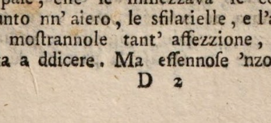La gatta Cenerentola of Lo Cunto de li Cunte.')"> | Signature marks, which are located below the print space and state the sheet or the position in the entire work, have not been taken into consideration. |
Click on the pictures to zoom in!
However, we have employed some specific solutions for the challenges related to the peculiarities of the texts:
Issue |
Example
Solution | |
|---|---|---|
| S-characters/graphemes | 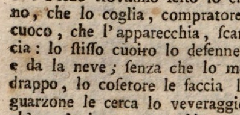Vardiello of Lo Cunto de li Cunte.')"> | S-characters/graphemes were transcribed as round-s. The letter “s” can appear in different forms, such as normal and long “s” (with descender, as can be seen in "stisso" in the text), which have been transcribed as normal round-s. |
| Unclear | 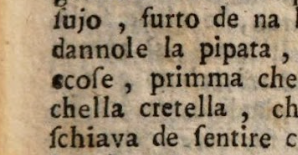Introduction of Lo Cunto de li Cunte.')"> | Unclear letters, words and passages have been highlighted with the dedicated “unclear” tag provided by Transkribus. |
| Gap | 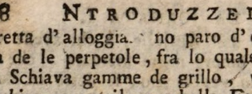Introduction of Lo Cunto de li Cunte.')"> | Missing letters and words that left empty spaces have been marked with the dedicated “gap” tag provided by Transkribus. |
Click on the pictures to zoom in!
After completing the transcription of all the selected images of the texts and before starting the training of a Text Recognition model, we assigned the transcribed pages to the Ground Truth state.
The Ground Truth consists of accurate and verified reference data, including the images and their corresponding precise transcriptions, which the model will use for learning and training.
This data is crucial for the success of the model, as machine learning statistically replicates the patterns found in the provided data.
Once the Ground Truth pages are prepared, the next step is to train the Text Recognition model.
Automatic Transcription
After training the Text Recognition Model starting from our Ground Truth pages, we used it to transcribe the printed text pages from the fourth tale in Lo Cunto de li Cunte, titled La vecchia scoperta, selected as our test set.
We proceeded with our analysis by using ChatGPT.
In this phase, we provided ChatGPT with images of the printed text pages from La vecchia scoperta which serves as our raw test set. We tasked ChatGPT with transcribing these images.
In line with the approach we used in Transkribus, we didn’t crop the images, deliberately including headers, page numbers, and signature marks to preserve the resolution and integrity of the images.
Subsequently, we instructed ChatGPT to transcribe the text from the input images while preserving the original line breaks and omitting unnecessary elements.
Evaluation
Once the Ground Truth text for our corpus was ready, we proceded with the Text Recognition Model training (as a reminder, the number of pages transcribed was 23, for a total of 6134 words). We decided to train two models on Basile's Lo Cunto de li Cunte edition. The first one, exclusively trained on our Ground Truth transcriptions, performed pretty well, with a CER on the validation set of 0.67%. In order to further decrease the character error rate, we fine-tuned our model by selecting the multi-language model Transkribus Print M1, trained on printed texts written in several languages, among which italian. By doing so, the CER on the validation set went down to 0.24%. This model, as the best performing one, was then selected for the comparison with ChatGPT.
The charts show the percentage of error (on the y-axis) for both the training and the validation set over the epochs (x-axis). Transkribus' default paramethers were adopted for the training of both the models: the number of epochs was set to 100 and the early stoppings to 20. As shown in the figures above, the first model stopped the training after 87 epochs, since there was no further improvement on the CER, while the second one stopped after 96 epochs.
The fine-tuned model was then used to automatically transcribe our test set, for which we chose a selection of pages from a fourth tale included in Lo Cunto de li Cunte, namely La vecchia scoperta. The same pages were then fed to ChatGPT and both the results of our custom model text recognition and the automatic transcription obtained with GPT were compared with our Ground Truth transcription for the test set.
The following sections present a detailed discussion of the results.
Transkribus
As mentioned in the Workflow section, our main goal was to train a model able to faithfully transcribe the text as printed on the page, with the only disclaimer of the normalization of s-graphemes, that the model should therefore have been able to interpret correctly by the end of the training. As consistenly used throughout the edition, we also decided to tag italic text as such, but the ability of the model to identify and mark the text was not our primary concern as not relevant for the performance evaluation comparison.
Given that, according to Transkribus documentation, a model for printed text with a CER on the validation set between 0.5% and 2% is believed to be very efficient, we can consider both the trained model highly performing. As mentioned above, however, we selected Basile Printed_fine-tuned for automatically transcribing the pages from La vecchia scoperta. Based on the transcription of unseen pages, we can say that:
- Overall transcription: the transcription needed few corrections, mainly on those sections of the page there were not part of the validation set - like the headings that introduce each tale - or more complex elements, like drop-caps. Text Recognition Models can be applied with or without a previous layout recognition. In our case, the direct application of the text recognition model caused the recognition and transcription of page numbers and catch-words, so, in order to consistently identify regions, it was necessary to perform a manual segmentation and re-apply the Text Recognition Model on the segmented pages.
- S-graphemes normalization: the model correctly identified and transcribed the majority of s-graphemes.
- Tags for italic text: as shown in Fig. 5.1, the model wasn't able to tag italic text.
ChatGPT
Our next step was to prompt ChatGPT by presenting it the same pages used for testing Transkribus' fine-tuned model. As shown in the following figure, the first transcription provided by GPT took into account page numbers and catch-words and collapsed line breaks.
In a following phase we asked ChatGPT to preserve line breaks in the transcription and, in order to obtain a transcription compliant with our annotation guidelines, to ignore page numbers, catch-words and, where needed, running titles.
A quick analysis of the transcription provided by ChatGPT shows that, unlike Transkribus' model, there wasn't any difficulty in the transcription of headings, while the most troublesome element, as expected, is represented by the normalization of s-graphemes.
Results
In order to evaluate the performance of Transkribus' trained model and ChatGPT on our test set, we used the Python library pywer for computing the Word Error Rate (WER) and Character Error Rate (CER) for both the automatic transcriptions by comparing them with our Ground Truth transcription.
Due to the characteristics of historical printed texts, that can exhibit major differences from page to page, we followed the OCR-D accuracy assessment methodology and provided not only the overall WER and CER scores, but also the scores per page.
Overall scores:
| WER | CER | |
|---|---|---|
| Basile Printed_fine-tuned | 2.44 | 0.51 |
| ChatGPT | 24.78 | 5.51 |
Scores per page:
| Model | Page | WER | CER |
|---|---|---|---|
| Basile Printed_fine-tuned | 1 | 7.17 | 1.59 |
| ChatGPT | 1 | 15.25 | 3.10 |
| Basile Printed_fine-tuned | 2 | 0.73 | 0.12 |
| ChatGPT | 2 | 28.47 | 6.29 |
| Basile Printed_fine-tuned | 3 | 0.35 | 0.06 |
| ChatGPT | 3 | 28.72 | 6.61 |
As a complementary tool that could provide us with an overall view of the typologies of errors and the main difficulties faced in the text recognition process, we used Python difflib library for producing an aligned comparison of the reference and prediction texts.
Line numbers in red mark the beginning of a new page.Additions are highlighted in green, substitutions in yellow and deletions in red.
| Ground Truth Text | GPT Transcription | ||||
|---|---|---|---|---|---|
| f | 1 | LA VECCHIA SCOPERTA | f | 1 | LA VECCHIA SCOPERTA |
| 2 | TRATTENEMIENTO X. | 2 | TRATTENEMIENTO X. | ||
| 3 | De la Jornata I. | 3 | De la Jornata I. | ||
| n | 4 | LO Rrè de Roccaforte se nnammora de la | n | 4 | Lo Rré de Rocoaforte se 'nnammora de la |
| 5 | voce de na vecchia: e gabbato da no di- | 5 | voce de na vecchia: e gabbato da no di- | ||
| n | 6 | to rezocato, la fa dormire cod'isso; ma addo- | n | 6 | ro rezocato, la fa dormire cod’ isso; ma addo- |
| 7 | natose de le rechieppe, la fa jettare pe na fe- | 7 | natose de le rechieppe, la fa jettare pe na fe- | ||
| n | 8 | nestra, e restanno appesa a n'arvolo è ffatata | n | 8 | nestra, e restanno appesa a ’n arbolo è ffatata |
| 9 | da sette Fate, e deventata na bellissima gio- | 9 | da sette Fate, e deventata na bellissima gio- | ||
| n | 10 | vane, lo Rrè se la piglia pe mogliere: ma l' | n | 10 | vane, lo Rré se la piglia pe mogliere: ma l’ |
| 11 | autra sore mmediosa de la fortuna soja pe ffa- | 11 | autra sore mmediosa de la fortuna soja pe ffa- | ||
| n | 12 | rese bella, se fa scortecare, e mmore. | n | 12 | se bella, se fa scortecare, e mmore. |
| 13 | No nce fu perzona, a chi n'avesse piaciuto | 13 | No nce fu perzona, a chi n’ avesse piaciuto | ||
| 14 | lo cunto de Ciommetella, ed appero no gusto | 14 | lo cunto de Ciommetella, ed appero no gusto | ||
| n | 15 | a doje sole, vedenno liberato Canneloro, e cca- | n | 15 | a doje sole, vedenno liberato Cannelore, e cca- |
| 16 | sticato l'Uorco, che ffaceva tanto streverio de | 16 | sticato l’ Uorco, che ffaceva tanto streverio de | ||
| 17 | li povere cacciature; e 'ntimato l'ordene a | 17 | li povere cacciature; e n’timato l’ ordene a | ||
| 18 | Ghiacova, che seggellasse co l'arme soje sta | 18 | Ghiacova, che seggellasse co l’ arme soje sta | ||
| 19 | lettera de trattenemiento, essa cossì trascorre. | 19 | lettera de trattenemiento, essa cossì trascorre. | ||
| n | 20 | LO 'mmarditto vizio 'ncrastato co nnuje autre | n | 20 | O 'mmarditto vizio 'neraftato co nnuje autre |
| 21 | femmene de parere belle, nce redduce a | 21 | femmene de parete belle, nce redduce a | ||
| 22 | termene tale che pe nnaurare la cornice de la | 22 | termene tale che pe nnaurare la cornice de la | ||
| 23 | fronte, guastammo lo quatro de la facce; pe | 23 | fronte, guastammo lo quatro de la facce; pe | ||
| 24 | ghianchejare le ppellecchie de la carne, roi- | 24 | ghianchejare le ppellecchie de la carne, roi- | ||
| n | 25 | nammo ll'ossa de li diente, e ppe ddare lu- | n | 25 | nammo l’ ofsa de li diente, e ppe ddare lu- |
| 26 | ce a li miembre, coprimmo d'ombre la vi- | 26 | ce a li miembre, coprimmo d’ ombre la vi- | ||
| 27 | sta, che nnanze l'ora de dare tributo a lo | 27 | sta, che nnanze l’ ora de dare tributo a lo | ||
| 28 | tiempo, s'apparecchiano scazzimme all'uoc- | 28 | tiempo, s’apparecchiano scazzimme all’ uoc- | ||
| 29 | chie, crespe a la facce, e defiette a le mmole; | 29 | chie, crespe a la facce, e defiette a le mmole; | ||
| 30 | ma se mmereta biasemo na giovanella, che trop- | 30 | ma se mmereta biasemo na giovanella, che trop- | ||
| n | 31 | po vana se dace a sse bacantarie, quanto è | n | 31 | po vana se dace a fse bacantarie, quanto è |
| 32 | cchiù ddegna de castigo na vecchia, che bolen- | 32 | chiù ddegnia de castigo na vecchia, che bolen- | ||
| 33 | no comparere co le ffigliole, se causa l'allucca | 33 | no comparere co le figliiole, se causa l’alluca | ||
| 34 | de la gente, e la ruina de se stessa; comme | 34 | de la gente, e la ruina de se stessa; comme | ||
| n | 35 | so pe contareve, se mme darrite no tantillo | n | 35 | fo pe contrareve, se mme darrite no tantillo |
| 36 | d'aurecchie. | 36 | d’aurecchie. | ||
| 37 | S'erano raccovete dinto a no giardino, dove | 37 | S’erano raccovete dinto a no giardino, dove | ||
| 38 | aveva l'affacciata lo Rrè de Rocca forte, doje | 38 | aveva l’affacciata lo Rré de Rocca-forte, doje | ||
| 39 | vecchiarelle; ch'erano lo reassunto de le dde- | 39 | vecchiarelle; ch’erano lo reafsunto de le dde- | ||
| 40 | sgrazie, lo protacuollo de li sturce, lo libro | 40 | grazìe, lo protacuollo de li sfurce, lo libro | ||
| 41 | maggiore de la bruttezza, le cquale avevano le | 41 | maggiore de la bruttezza, le quale avevano le | ||
| 42 | zervole scigliate, e 'ngrifate, lo fronte 'ncrespa- | 42 | zervole fscigliate, e ’ngrifate, lo fronte ’ncrefpa- | ||
| 43 | to, e brognoluso, le cciglia storcigliate, e rre- | 43 | to, e brognolufo, le ciglia ftorcigliate, e rre- | ||
| 44 | stolose, le pparpetole chiantute, ed a ppenne- | 44 | ftolofe, le pparpetoIe chiantute, ed a ppenne- | ||
| 45 | ricolo, l'uocchie vizze, e scarcagnate, la facce | 45 | ricolo, l’uocchie vizze, e fcarcagnate, la facce | ||
| 46 | gialloteca, ed arrappata, la vocca squacquara- | 46 | gialloteca, ed arrappata, la vocca sfaqquara- | ||
| 47 | ta, e storta, e 'nsomma la varva d'annecchia, | 47 | ta, e florta, e ’nfomma la varva d’annecchia, | ||
| 48 | lo pietto peluso, le spalle co la contrapanzetta | 48 | lo pietto pelufo, le fpalle co la contrapanzetta, | ||
| 49 | le braccia arronchiate, le gamme sciancate, e | 49 | le braccia arronchiate, le gamme fciancate, e | ||
| 50 | scioffate, e li piede a ccrocco: pe la quale co- | 50 | fcioffate, e li piede a crocco: pe la quale co- | ||
| 51 | sa azzò no le bedesse manco lo Sole, co cchel- | 51 | fa azzò no Ie bedefse manco lo Sole, co cchel- | ||
| 52 | la brutta caira, se ne stevano 'ncaforchiate din- | 52 | la brutta caira, fe ne ftevano ’ncafofnirate din- | ||
| 53 | to no vascio sotto le ffenestre de chillo Signo- | 53 | to no vafto fotto le ffenefstre de chillo Signo- | ||
| 54 | re, lo quale era arreddutto a ttermene, che | 54 | re, lo quale era arredutto a ttermene, che | ||
| 55 | non poteva fare no pideto senza dare a lo na- | 55 | non poteva fare no pideto senza dare a lo na- | ||
| n | 56 | so de ste brutte gliannole, che d'ogne poco | n | 56 | so de fte brutte giannole, che d’ogne poco |
| 57 | cosa 'mbroselejavano, e sse pigliavano lo tota- | 57 | cofa ’mbrofelejavano, e fse pigliavano lo tota- | ||
| 58 | no; mò decenno ca no giesommino cascato da | 58 | no; mò decenno ca no gieformino cafcato da | ||
| 59 | coppa, l'aveva 'mbrognolato lo caruso, mò ca | 59 | coppa, l’aveva ’mbrognolato lo carufo, mò ca | ||
| 60 | na lettera stracciata l'aveva 'ntontolato na spal- | 60 | na Iettera ffracciata l’aveva ’ntontolato na fpal- | ||
| 61 | la, mò ca no poco de porvere l'aveva amma- | 61 | la, mò ca no poco de porvere l’aveva amma- | ||
| 62 | tontato na coscia, tanto che ssentenno sto scas- | 62 | ttontato na cofcía, tanto che ffentennò fto fca- | ||
| 63 | sone de dellecatezza lo Rrè, facette argomien- | 63 | fone de dellecatezza lo Rré, facette argomien- | ||
| 64 | to, che ssotto ad isso fosse la quintassenzia de | 64 | to, che fotto ad isso fofse la quintafsenza de | ||
| 65 | le ccose cenere, lo primmo taglio de le cca- | 65 | Ie ccofe cenere, lo primmo taglio de Ie cca- | ||
| 66 | mumme mollise, e l'accoppatura de le ttenne- | 66 | mumme mollife, e l’accoppatura de le ttenne- | ||
| 67 | rumme, pe la quale mente cosa le venne go- | 67 | mumme, pe la quale mente cofa le venne go- | ||
| 68 | lio da l'ossa pezzelle, e boglia da le ccata- | 68 | lio da l’ofsa pezzelle, e boglia da le ccata- | ||
| 69 | melle de l'ossa de vedere sto spanto, e cchiarire- | 69 | melle de l’ofsa de vedere fto fpanto, e chiiarire- | ||
| 70 | se de sto fatto, e accommenzaje a ghiettare so- | 70 | fe de fto fatto, e accommenzaje a ghiettare fo- | ||
| 71 | spire da coppa, e bascio, a rrascare senza ca- | 71 | spire da coppa, e bafcio, a rrafcare senza ca- | ||
| 72 | tarro, e finalemente a pparlare cchiù speduto, | 72 | tarro, e finalmente a pparlare cchiù fpeduto, | ||
| 73 | e ffora de li diente, decenno: Dove, dove te | 73 | e ffiora de li diente, decenno: Dove, dove te | ||
| 74 | nascunne, giojello, sfuorgio, isce bello de lo | 74 | nafscunne, giojello, sfuorgio, ifce bello de lo | ||
| 75 | munno? jesce jesce sole, scaglienta 'mparatore: | 75 | mmunno? jefce jefce fole, fcaglíenta ’mparatore: | ||
| 76 | scuopre sse belle grazie, mostra sse llocernelle | 76 | fscuopre fte belle grazie, moftra fte filocernelle | ||
| 77 | de l'addorosa poteca d'ammore? caccia sta ca- | 77 | de l’addorofa poteca d’ammore? caccia fta ca- | ||
| 78 | tarozzola banco accorzato de li contante de le | 78 | tarozzola banco accorzato de li contante de le | ||
| n | 79 | bellezze: non essere accossì scarzogna de la vi- | n | 79 | bellezze: non effere accofsi fcarzogna de la vi- |
| 80 | sta toja; apre le pporte a ppovero farcone, | 80 | fta toja; apre le pporte a ppovero farcone, | ||
| 81 | famme la 'nferta si mme la vuoje fare? lassem- | 81 | famme la ’nferta sì mme la vuoje fare? Iaffem- | ||
| 82 | me vedere lo stromiento da dove esce ssa bella | 82 | me vedere lo fftrumento da dove efce fsa bella | ||
| 83 | voce: fa che bea la campana, da la quale se | 83 | voce: fa che bea la campana, da la quale fe | ||
| 84 | forma lo 'ntinno, famme pigliare na vista de | 84 | forma lo ’ntinno, famme pigliare na vifta de | ||
| 85 | ss'auciello, non consentire, che ppecora de | 85 | fs’auciello; non consentire, che ppecora de | ||
| 86 | Ponto mme pasca de nascienzo, co nnegareme | 86 | Ponto mme pafca de nafscienzo, co ’nnegareme | ||
| 87 | lo mmirare, e ccontemprare sta bellezzetudene | 87 | lo mmirare, e contemplare fta bellezetudene | ||
| 88 | cosa; cheste, ed autre pparole deceva lo Rrè; | 88 | cofa; chefte, ed altre pparole deceva lo Rré; | ||
| 89 | ma poteva sonare a grolia, ca le becchie ave- | 89 | ma poteva fonare a grolia, ca le becchie ave- | ||
| 90 | vano 'ntompagnate l'aorecchie, la quale cosa | 90 | vano ’ntompagnate l’aorecchie, la quale cofa | ||
| 91 | refonneva legne a lo ffuoco. E lo Rrè, che se | 91 | refonneva legne a lo ffiuoco. E lo Rré, che fe | ||
| 92 | senteva comm'a ffierro scaudare a la fornace de | 92 | fenteva comm’a fierro fscaudare a la fornace de | ||
| 93 | lo desederio, tenere da le ttenaglie de lo pen- | 93 | lo defiderio, tenere da le ttenaglie de lo pen- | ||
| 94 | ziero, e mmartellare da lo maglio de lo tor- | 94 | ziero, e mmartellare da lo maglio de lo tor- | ||
| t | 95 | miento amoruso, pe fare na chiave, che potes- | t | 95 | miento amorufo, pe fare na chiave, che potef- |
| 96 | se aprire la cascetella de le gioje, che lo face- | 96 | fe aprire la ccfecetella de le gioje, che lo face- | ||
| 97 | vano morire speruto; ma non pe cchesto se | 97 | vano morire fpeduto; ma non pe cchefto fe | ||
| 98 | dette arreto, ma secotaje a mmannare suppre- | 98 | dette arreto, ma fcootaje a mmanare fuppre- | ||
| 99 | che, e a rrenforzare assunte, senza pigliare ma- | 99 | che, e a rrenforzare afsunze, senza pigliare ma- | ||
| 100 | je abbiento. Tanto che le becchie, che s'era- | 100 | je abbiento. Tanto che le becchie, che s’era | ||
A careful analysis of the outputs allowed us to understand where the errors occurred and, in some cases, what may had caused them. First of all, some of the substitions highlighted in the diff table (like GT: "Roccaforte", P: "Rocoaforte" or GT:"arvolo", P: "arbolo") are due to the quality of the printed material, where often ink stains and other damages made the recognition particularly difficult.
For similar reasons, frequent substitutions involve the confusion between lower case "l" and upper case "I", or between "t" and "r", not always easily identifiable.
However, some errors could be easily addressed by refining prompts. In particular, we immediately realized that, in the transcription provided by ChatGPT, all severe-stressed "e" characters were transcribed as acute-stressed, and that the apostrophe was not consistently transcribed, but frequently replaced with a right single quotation character. ChatGPT was able to correct almost all the occurrences of the described phenomena. The WER and CER metrics applied on the transcriptions obtained after refining the prompts show the following results:
| WER | Decrease on WER | CER | Decrease on CER | |
|---|---|---|---|---|
| Overall score | 20.42 | -4.36 | 4.46 | -1.05 |
| Page 1 | 13.45 | -1.80 | 2.14 | -0.96 |
| Page 2 | 22.99 | -5.48 | 5.10 | -1.19 |
| Page 3 | 24.82 | -3.90 | 5.62 | -0.99 |
Addressing these errors lead to some improvements in the error rates, however, the main issue in the transcription provided by ChatGPT is represented by the incorrect identification of the "long-s", always transcribed as "f" in the output transcription. Attempts to refine prompts in order to obtain a correct transcription of "long-s" characters were only partially successfull, as shown in the following scores for page 1 after the replacement of "long-s" characters:
| WER | Decrease on WER | CER | Decrease on CER | |
|---|---|---|---|---|
| Page 1 | 14.35 | -0.90 | 2.62 | -0.48 |
In some cases, ChatGPT was able to transcribe a round-s, but there were also instances where the model was unable to distinguish between long-s and "f", extending the rendering to the latter and leading to an increase of the error rate with respect to the previous scores, and to a minor decrease with respect to the first transcription.
Conclusion
After evaluating the performance of both models on the raw test set, we found that ChatGPT's transcription accuracy is noticeably lower than that of the model we developed. However, our analysis of ChatGPT's output revealed that some errors could be addressed by refining the prompts, manually correcting individual characters, or simply cleaning up the text. Given the time-intensive nature of training Transkribus models, ChatGPT's rapid transcription can provide a solid foundation for semi-automated corrections.
Ultimately, the decision of which model to use for transcription depends on the specific material, the user's expertise and requirements, as well as the available resources, including time constraints.
For accurate transcriptions of historical printed texts, leveraging a pre-trained public Transkribus model can be a practical option, allowing users to save time without the need to train a customized model. In this context, considering the language and era of the text, the Transkribus Print M1 model emerges as a strong alternative. On our test set, this model's performance ranks between that of our fine-tuned Basile Printed model and ChatGPT, making it a viable choice for achieving quality automated transcriptions.
To be continued...
Since we observed that the model we developed functions correctly and has a relatively low margin of error, we couldn’t help but reflect on its potential future applications. We then thought it would be interesting to apply this model to other printed texts from the same period but belonging to a different context, to evaluate whether the results would be equally satisfactory.
We therefore identified the 1779 edition by Masi e Com. of the text *La Secchia Rapita* written by Alessandro Tassoni. It is a mock-heroic poem, whose tone is very similar to that of “Lo cunto de li cunte”, but the context is quite different. Tassoni, in fact, is a Modenese author who employs a completely different style, ranging from epic tones to sudden shifts into more burlesque ones. Clearly, there is no trace of Neapolitan in his work; instead, he draws from the language first used by Ariosto and later by Tasso, with the addition of comedic, popular elements.
We manually transcribed the first 22 pages of La secchia rapita and trained a new model using again the Transkribus Print M1 as the base model. We automatically selected the 10% of the training set for the validation and obtained a model with Character Error Rate of 0.59%.
References
- About Basile and Tassoni:
- Basile G., Lo cunto de li cunti, a cura di M. Rak, Milano, Garzanti, 2013
- Luperini R., Cataldi P., Marchiani L., Marchese F.,Le Parole le cose vol.2, dal Manierismo al Romanticismo, Palermo, Palumbo Editore, 2016.
- Alfano G., Italia P., Russo E., Tomasi F., Profilo di letteratura italiana, Milano, Mondadori, 2021
- Transkribus Help Center and Transkribus Blog:
- Character Error Rate and Learning
- Choosing a Model
- Data Preparation
- How to Retrain a Model in Transkribus
- Model Setup and Training
- Super Models
- Training Text Recognition Models
- Transcribing Manually
- What is Ground Truth?
- On ChatGPT and text recognition:
- GPT-4 Technical Report
- Riedl M., A Very Gentle Introduction to Large Language Models without the Hype
About us
The team is enrolled in the master degree course in Digital Humanities and Digital Knowledge at the Univeristy of Bologna. This work was realized as a project for the Semantic Digital Libraries course.